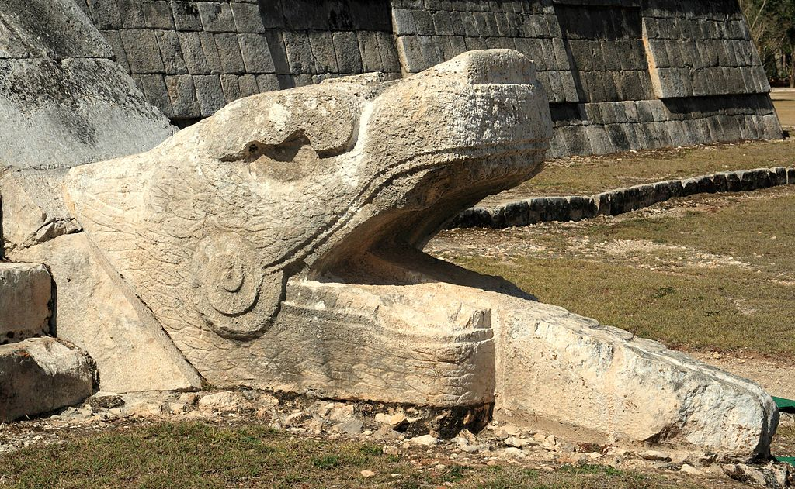

Chichen Itza was a Mayan city on the Yucatan Peninsula in Mexico. Although it’s an important tourist attraction, Chichen Itza also remains an active archeological site. New discoveries are still being unearthed in the area, providing even more insight into the culture and accomplishments of the Mayan people, who ruled much of present-day Mexico and Central America prior to the arrival of European colonists. Chichen Itza was named a UNESCO World Heritage Site in 1988 and, in 2007, it was voted in a global survey as one of the New Seven Wonders of the World.
Who found Chichen Itza?
Chichen Itza was found by a group of people called The Maya
Who are the Maya?
Maya, Mesoamerican Indians occupying a nearly continuous territory in southern Mexico,guatimala and northern Belize. In the early 21st century some 30 Mayan languages were spoken by more than five million people, most of whom were bilingual in Spanish. Before the Spanish conquest of Mexico and Central America, the Maya possessed one of the greatest civilizations of the Western Hemisphere . They practiced agriculture, built great stone buildings and pyramid temples, worked gold and copper, and used a form of hieroglyphic writing that has now largely been deciphered.
As early as 1500 BCE the Maya had settled in villages and had developed an agriculture based on the cultivation of corn (maize), beans, and squash; by 600 CE cassava (sweet manioc) was also grown. They began to build ceremonial centres, and by 200 CE these had developed into cities containing temples, pyramids, palaces, courts for playing ball, and plazas.
Facts
Facts about Chichen Itza
Chichen Itza is classified as one of the New Seven Wonders of the World and in 1988 was enlisted as a UNESCO World Heritage Site.
The term Chichen Itza means the mouth at the well of Itza. It is believed Itza means water magicians, deriving from the Mayan Itz for magic and á for water.
El Castillo (the Temple of Kukulkan) is the famous pyramid which dominates the site of Chichen Itza and it actually sits on another much older temple
Believed by archaeologists to have been a powerful economic city around 600 AD, the fall of Chichen Itza is thought to have been approximately 1000 AD.
The design and layout of Chichen Itza was clearly well planned and builders constructed temples and pyramids in sets of clusters.
The four most well-known clusters are the Great North Platform, the Ossario Group, the Central Group and the Old Chichen, which is not open to the public. The Great North Platform is home to the most visited sites of Chichen Itza, including the Kukulkan Pyramid, the Great Ball Court and the Temple of the Jaguars.
During the Spring (20th of March) and Autumn Equinox (22nd September), the sun’s rays create a shadow across the Kukulkan Pyramid that gives the appearance of a serpent slithering down the staircase.
Located on the north side of the Kukulkan Pyramid is a platform dedicated to the planet Venus. The Mayans were devoted astronomers and the movements of Venus held special meaning to them, with it influencing the architecture of the ancient Mayan city Uxmal
Although the Kukulkan Pyramid is the most famous and most visited, there are numerous others in Chichen Itza. The Osario is very similar but smaller in size and at the centre is an opening to a natural cave.
Many of the sites in Chichen Itza are known for their unusual sounds. If you clap once from one end of the Ball Court, it produces nine echoes in the middle of the court. Additionally, a clap in front of the Kukulkan Pyramid creates an echo resembling the serpent’s chirp.
Pyramids Castillo
La Pirámide, known as the Temple of Kukulcán (or also just as Kukulcán), is a Mesoamerican step-pyramid that dominates the center of the Chichen Itza archaeological site in the Mexican state of Yucatán. The pyramid building is more formally designated by archaeologists as Chichen Itza
Who built the pyramid?
Introduction. El Castillo, also known as the Temple of Kukulcan, is a Mesoamerican step-pyramid built by the Maya civilisation in around 1000 AD
What is so special about EL Castillo
El Castillo—in Spanish, “the castle”—looms at the center of Chichén Itzá, a 79-foot pyramid of stone. Also known as the Pyramid of Kukulkán, the structure embodies Mayan myth along with natural astronomical cycles. The phenomenon that El Castillo is famous for occurs twice each year, at the spring and fall equinoxes
The dimensions of the Castillo
The structure is 24 m (79 ft) high, plus an additional 6 m (20 ft) for the temple at the top. The square base measures 55.3 m (181 ft) across.
Inside EL Castillo
Earlier excavations in the 1930s had already revealed one structure inside the pyramid containing a red jaguar throne studded with jade
3D Model
Which came first Mayan or Egyptian pyramid?
Mesoamerican peoples built pyramids from around 1000 B.C. up until the time of the Spanish conquest in the early 16th century . (Egyptian pyramids are much older than American ones; the earli est Egyptian pyramid, the Pyramid of Djoser, was built in the 27 century BC).
Facts About EL Castillo
It has several names
Today, the pyramid has several names. Why? El Castillo, is Spanish and means “The Castle”. This was the name the Spanish conquistadors gave the pyramid when they arrived in the ancient civilisation. However, the building was never really a castle, nor a fortress, as the Spaniards assumed. Instead, it’s believed to have been constructed in honour of the serpent deity Kukulkán
It’s 25 metres high
At 25 metres high, the Pyramid of Kukulkán is by no means the tallest pyramid the ancient Mayans built. Even in the Yucatán peninsula, El Castillo can’t claim to be the highest pyramid (the title goes to the 42-metre high Nohoch Mul in Cobá
It’s actually several pyramids
From the outside you’d never know, but underneath the pyramid is actually another pyramid. Discovered as recently as in 2016, the larger, newer pyramid was built on top of an older, smaller one There are at least two pyramids, but there might even be more!
It’s over1300 years old
It’s like a gigantic Mayan Calendar
El Castillo is a great example of the unbelievably precise mathematic, astronomic and architectural knowledge the ancient Mayans had
It might be proof the Mayans were masters in acoustic engineering
There’s a serpent show every autumn and spring equinox
Twice a year, during autumnand spring equinox, the pyramid hosts a show that still today attracts thousands of spectators
It might be sitting on top of a cenote
In 2015, archaeologists discovered that the older pyramid might be sitting on top of a cenote. The cenote under the pyramid is estimated to be 20 metres deep
Treasures have been found inside
Inside the older pyramid archaeologists have made some significant discoveries. In the smaller pyramid’s temple there’s a red jaguar throne with inlaid spots and eyes of jade. There’s also a Chac-mool; a Mayan stone sculpture of a reclining figure used in sacrificial rituals.
EL Castillo Photos
Situation map of Chichen Itza
North side of the Temple of Kukulcán
West side of the Temple of Kukulcán
South side of the Temple of Kukulcán

Plumed Serpent on Kukulcán
Shadows cast on Kukulcán during Equinox at Chichen Itza